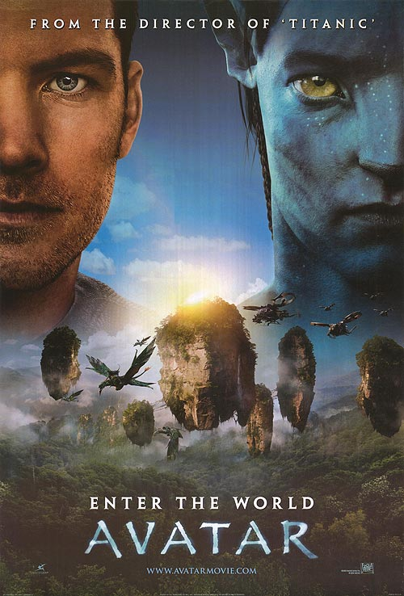

Jason Pu
apprentice programmer
High school student, planning to major in Computer Science
My Favorite movies
|  |
AvatarWhen his brother is killed in a robbery, paraplegic Marine Jake Sully decides to take his place in a mission on the distant world of Pandora. There he learns of greedy corporate figurehead Parker Selfridge's intentions of driving off the native humanoid "Na'vi" in order to mine for the precious material scattered throughout their rich woodland. In exchange for the spinal surgery that will fix his legs, Jake gathers intel for the cooperating military unit spearheaded by gung-ho Colonel Quaritch, while simultaneously attempting to infiltrate the Na'vi people with the use of an "avatar" identity. While Jake begins to bond with the native tribe and quickly falls in love with the beautiful alien Neytiri, the restless Colonel moves forward with his ruthless extermination tactics, forcing the soldier to take a stand - and fight back in an epic battle for the fate of Pandora. |

|
InterstellarEarth's future has been riddled by disasters, famines, and droughts. There is only one way to ensure mankind's survival: Interstellar travel. A newly discovered wormhole in the far reaches of our solar system allows a team of astronauts to go where no man has gone before, a planet that may have the right environment to sustain human life. |
The PrestigeIn the end of the Nineteenth Century, in London, Robert Angier, his beloved wife Julia McCullough and Alfred Borden are friends and assistants of a magician. When Julia accidentally dies during a performance, Robert blames Alfred for her death and they become enemies. Both become famous and rival magicians, sabotaging the performance of the other on the stage. When Alfred performs a successful trick, Robert becomes obsessed trying to disclose the secret of his competitor with tragic consequences. |